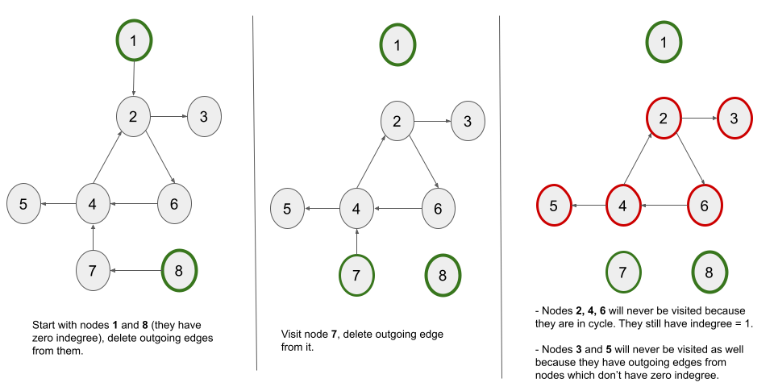

We are given a directed graph of n nodes with each node labeled from 0 to n -
1. The graph is represented by a 2D integer array graph where graph[i] is an
integer array of nodes that have an incoming edge from node i.
The problem states that a node is a terminal node if there are no outgoing edges. A node is a safe node if every possible path starting from that node leads to a terminal node (or another safe node).
Our task is to return a sorted array of all the safe nodes of the graph.
To solve the problem, we must first consider when a node is safe or unsafe. If we begin at any node and proceed along any path from that node, we will eventually reach either a terminal node or enter a cycle and continue to loop in it without ever reaching a terminal node.
If there is no path from the node that enters a cycle, we will always be able to reach a terminal node. As a result, such a node is a safe node and should be added to our answer array.
The problem is reduced to finding the nodes that do not have any paths that lead to a cycle.
Intuitively, we can realize that a node is safe if all of its outgoing edges are to nodes that are also safe. This is due to the fact that if no neighbor leads to a cycle, no path from the node can either.
We know the terminal nodes are safe. As a result, nodes that solely have outgoing edges to terminal nodes are eventually safe nodes. Then we may check the nodes that have just outgoing edges to safe nodes again and keep updating until no new safe node is discovered.
The question is, how do we efficiently traverse from terminal nodes to nodes that only have outgoing edges to terminal nodes? We can reverse the edges of the graph to create a new graph with reversed edges. After we have visited all of the terminal nodes, we can use this new graph to go to the nodes that have edges to the terminal nodes in the original graph by using the reverse edges that we added.
Let's put this new graph to use now. A node is a safe node if all of its incoming edges come from previously identified safe nodes in the graph. If we erase the edges outgoing from the safe node and discover a node with no incoming edges, it is a new safe node. This gives us hints for thinking about Kahn's method, which does a topological sort by removing the edges in the exact way we want.
A topological sort or topological ordering of a directed graph is a linear ordering of its vertices such that for
every directed edge u -> v from vertex u to vertex v, u comes
before v in the ordering.
In a directed acyclic graph, we can use Kahn's algorithm to get the topological ordering. Kahn’s algorithm works by keeping track of the number of incoming edges into each node (indegree). It works by repeatedly visiting the nodes with an indegree of zero and deleting all the edges associated with it leading to a decrement of indegree for the nodes whose incoming edges are deleted. This process continues until no elements with zero indegree can be found.
If you are not familiar with Kahn's algorithm, we suggest you read our LeetCode Explore Card.
The advantage of using Kahn's technique is that it also aids in the discovery of graph cycles. The Kahn's method does not visit any node in a cycle. As a result, nodes with outgoing edges from nodes in the cycle (in this reversed graph) will never be visited and so will never be marked safe. Nodes with outgoing edges from these unsafe nodes will never be visited as well, and so on. Basically, every node in the original network that has a path to the cycle will never be visited by Kahn's algorithm, which is exactly what we want.
Let's perform Kahn's algorithm on a directed graph having a cycle. Here's a visual step-by-step represenntation of how it would work:

We can see that if there is a cycle, the indegree of nodes in the cycle cannot be set to 0 due to cyclic
dependency. We are unable to visit the cycle's nodes. We are also unable to visit any node with an incoming edge
from any node in the cycle. Similary, realize that any node with an incoming edge from nodes 3 or
5 would not have been visited as well.
n equal to the length of graph to get the number of nodes in the
given graph.
indegree of length n where indegree[x] stores the number
of edges entering node x.
adj in which adj[x] contains all the nodes with an
incoming edge from node x, i.e., neighbors of node x. We create this adjacency list by
iterating over graph and adding the reverse edges. For a node i which
originally has outgoing edges to nodes in graph[i], we push i into
adj[node] to add a reverse edge from node to i.
q and start a BFS algorithm moving from the leaf nodes to the parent
nodes.
indegree equal to 0) in the
queue.
safe of size n to track the safe nodes in the graph.node from the queue.node as safe.neighbor (nodes that have an incoming edge from node) of
node, we decrement indegree[neighbor]by 1 to delete the node
-> neighbor edge.
indegree[neighbor] == 0, it means that neighbor behaves as a leaf node, so
we push neighbor in the queue.
safeNodes of size n. Iterate over all the nodes from
0 to n - 1 and add all the safe nodes in safeNodes.
safeNodes.
Java
class Solution {
public List eventualSafeNodes(int[][] graph) {
int n = graph.length;
int[] indegree = new int[n];
List> adj = new ArrayList<>();
for(int i = 0; i < n; i++) {
adj.add(new ArrayList<>());
}
for (int i = 0; i < n; i++) {
for (int node : graph[i]) {
adj.get(node).add(i);
indegree[i]++;
}
}
Queue q = new LinkedList<>();
// Push all the nodes with indegree zero in the queue.
for (int i = 0; i < n; i++) {
if (indegree[i] == 0) {
q.add(i);
}
}
boolean[] safe = new boolean[n];
while (!q.isEmpty()) {
int node = q.poll();
safe[node] = true;
for (int neighbor : adj.get(node)) {
// Delete the edge "node -> neighbor".
indegree[neighbor]--;
if (indegree[neighbor] == 0) {
q.add(neighbor);
}
}
}
List safeNodes = new ArrayList<>();
for (int i = 0; i < n; i++) {
if (safe[i]) {
safeNodes.add(i);
}
}
return safeNodes;
}
}
C++
class Solution {
public:
vector eventualSafeNodes(vector>& graph) {
int n = graph.size();
vector indegree(n);
vector> adj(n);
for (int i = 0; i < n; i++) {
for (auto node : graph[i]) {
adj[node].push_back(i);
indegree[i]++;
}
}
queue q;
// Push all the nodes with indegree zero in the queue.
for (int i = 0; i < n; i++) {
if (indegree[i] == 0) {
q.push(i);
}
}
vector safe(n);
while (!q.empty()) {
int node = q.front();
q.pop();
safe[node] = true;
for (auto& neighbor : adj[node]) {
// Delete the edge "node -> neighbor".
indegree[neighbor]--;
if (indegree[neighbor] == 0) {
q.push(neighbor);
}
}
}
vector safeNodes;
for(int i = 0; i < n; i++) {
if(safe[i]) {
safeNodes.push_back(i);
}
}
return safeNodes;
}
};
Python3
class Solution:
def eventualSafeNodes(self, graph: List[List[int]]) -> List[int]:
n = len(graph)
indegree = [0] * n
adj = [[] for _ in range(n)]
for i in range(n):
for node in graph[i]:
adj[node].append(i)
indegree[i] += 1
q = deque()
# Push all the nodes with indegree zero in the queue.
for i in range(n):
if indegree[i] == 0:
q.append(i)
safe = [False] * n
while q:
node = q.popleft()
safe[node] = True
for neighbor in adj[node]:
# Delete the edge "node -> neighbor".
indegree[neighbor] -= 1
if indegree[neighbor] == 0:
q.append(neighbor)
safeNodes = []
for i in range(n):
if safe[i]:
safeNodes.append(i)
return safeNodes
Here, nn is the number of nodes and mm is number of edges in the graph.
Time complexity: O(m+n)O(m + n)
adj list takes O(m)O(m) time as we
go through all the edges. The indegree array take O(n)O(n)
time.
safe array also takes O(n)O(n) time.
m edges, it would take O(m)O(m)
time to iterate over the edges.
safeNodes also takes O(n)O(n) time.
Space complexity: O(m+n)O(m + n)
adj arrays takes O(m)O(m) space. The
indegree array takes O(n)O(n)
space.
safe array also takes O(n)O(n) space.
We can also use a depth-first search (DFS) traversal to detect the nodes that lead to a cycle, i.e., unsafe nodes.
In DFS, we use a recursive function to explore nodes as far as possible along each branch. Upon reaching the end of a branch, we backtrack to the previous node and continue exploring the next branches.
Once we encounter an unvisited node, we will take one of its neighbor nodes (if exists) as the next node on this branch. Recursively call the function to take the next node as the 'starting node' and solve the subproblem.
A node remains in the DFS recursion stack until all of its branches (all nodes in its subtree) have not been explored. When we have examined all of a node's branches, i.e. visited all of the nodes in its subtree, the node is removed from the DFS recursive stack.
If you are new to Depth First Search, please see our Leetcode Explore Card for more information on it!
To find the unsafe nodes, we must first recognise a cycle in the graph. If we find a cycle, we will mark all of the nodes in the cycle as unsafe and then go back and mark all of the nodes that led to this cycle as unsafe. Let's find a cycle first.
If the graph has a cycle, we must have a back edge connecting a node to one of its ancestors while traversing nodes in the DFS manner.
Let's think how we can establish whether or not a node's neighbor is an ancestor when navigating from one node to another.
If the neighboring node has not yet been visited, it cannot be an ancestor (it is a child node).
Otherwise, if a neighboring node is visited, it may or may not be an ancestor. If the neighboring node is an ancestor, i.e. there is a back edge, it means that we visited this ancestor node first in the DFS traversal, then visited and explored some other nodes, and eventually visited a node that connects back to the ancestor node. As we are still exploring the ancestor node's subtree while iterating over this path, hence this node must be in the current DFS recursive stack.
However, if a neighboring node is visited but not in the recursion stack, it signifies we have previously explored that node in a different branch, and it does not form a cycle in the current branch.
As a result, to detect the cycle we must keep track of the visited nodes (like in a normal DFS) and also the nodes in
the function's recursion call stack for DFS traversal. The nodes in the stack store the current path that we are on.
There is a cycle in the graph if a node is reached that is already in the recursion stack. We use a boolean array
inStack of length n to track which nodes are in the call stack so we can check if a node
exists in O(1)O(1). Note that this
inStack array is emulating the call stack that the computer is using under the hood to execute
recursion. We mark an unvisited node in inStack when we make a recursive call to it and then unmark it
when we return from that call.
Now that we've identified the cycle, let's look for the unsafe nodes. When we get a cycle, all of the nodes in the
recursion stack either form or lead to a cycle. If we start a DFS traversal from node 1 in a graph
1 -> 2 -> 3 -> 4 -> 2, nodes 2, 3, and 4 form a
cycle. When we discovered this cycle, node 1 was also in the stack. So, when we have a cycle, all the
nodes in the recursion stack are unsafe since they form or lead to a loop.
In addition to detecting cycles, we can use the same inStack array to store the unsafe nodes. We do not
unmark any of the unsafe nodes from inStack to keep track of them. When any node has an
outgoing edge to any of the unsafe nodes, we can immediately return the DFS call for node without
unmarking it from inStack, i.e, we do not perform inStack[node] = false. This is because
if any neighbor of node is marked inStack, it signifies that either neighbor
and node are part of a cycle or neighbor is a previously detected unsafe node. In both the
cases, node is also an unsafe node and hence we return the DFS call without unmarking node
from inStack.
We only unmark a node from inStack, if we have explored all of its branches and no branch leads to an
unsafe node.
adj in which adj[x] contains all the nodes with an
incoming edge from node x, i.e., neighbors of node x. We create this adjacency list by
iterating over graph. For every node i, we add edges from i to all the
nodes in graph[i].
visit and inStack, each of size n. The visit
array keeps track of visited nodes and inStack keeps track of nodes that are currently in the
ongoing DFS stack. It will help us to detect a cycle in the graph and the unsafe nodes.
dfs method which takes four parameters: an
integer node from which the current traversal begins, adj, visit, and
inStack. It returns a boolean indicating whether node is unsafe. We perform the
following in this method:
node is already present in inStack, either we just got a cycle or a
previously detected unsafe node. We return true in this case as the node is
unsafe.
node is already visited (but not in inStack), we return false
because we already visited this node and didn't find it as unsafe node. It is a safe node.
node as visited and also mark it in inStack (inStack[node] =
true).
node and for each neighbor, we
recursively call dfs(neighbor, adj, visit, inStack). If we get a cycle from
neighbor (or neighbor is a previously detected unsafe node), we return true
without unmarking node in inStack.
node, we mark inStack[node] =
false to mark node as safe. We return false.
safeNodes of size n. Iterate over all the nodes from
0 to n - 1 and add all the safe nodes in safeNodes, i.e., the nodes with
inStack[node] == false.
safeNodes.
Java
class Solution {
public boolean dfs(int node, List> adj, boolean[] visit, boolean[] inStack) {
// If the node is already in the stack, we have a cycle.
if (inStack[node]) {
return true;
}
if (visit[node]) {
return false;
}
// Mark the current node as visited and part of current recursion stack.
visit[node] = true;
inStack[node] = true;
for (int neighbor : adj.get(node)) {
if (dfs(neighbor, adj, visit, inStack)) {
return true;
}
}
// Remove the node from the stack.
inStack[node] = false;
return false;
}
public List eventualSafeNodes(int[][] graph) {
int n = graph.length;
List> adj = new ArrayList<>();
for (int i = 0; i < n; i++) {
adj.add(new ArrayList<>());
for (int node : graph[i]) {
adj.get(i).add(node);
}
}
boolean[] visit = new boolean[n];
boolean[] inStack = new boolean[n];
for (int i = 0; i < n; i++) {
dfs(i, adj, visit, inStack);
}
List safeNodes = new ArrayList<>();
for (int i = 0; i < n; i++) {
if (!inStack[i]) {
safeNodes.add(i);
}
}
return safeNodes;
}
}
C++
class Solution {
public:
bool dfs(int node, vector>& adj, vector& visit, vector& inStack) {
// If the node is already in the stack, we have a cycle.
if (inStack[node]) {
return true;
}
if (visit[node]) {
return false;
}
// Mark the current node as visited and part of current recursion stack.
visit[node] = true;
inStack[node] = true;
for (auto neighbor : adj[node]) {
if (dfs(neighbor, adj, visit, inStack)) {
return true;
}
}
// Remove the node from the stack.
inStack[node] = false;
return false;
}
vector eventualSafeNodes(vector>& graph) {
int n = graph.size();
vector> adj(n);
for (int i = 0; i < n; i++) {
for (auto node : graph[i]) {
adj[i].push_back(node);
}
}
vector visit(n), inStack(n);
for (int i = 0; i < n; i++) {
dfs(i, adj, visit, inStack);
}
vector safeNodes;
for (int i = 0; i < n; i++) {
if (!inStack[i]) {
safeNodes.push_back(i);
}
}
return safeNodes;
}
};
Python3
class Solution:
def dfs(self, node, adj, visit, inStack):
# If the node is already in the stack, we have a cycle.
if inStack[node]:
return True
if visit[node]:
return False
# Mark the current node as visited and part of current recursion stack.
visit[node] = True
inStack[node] = True
for neighbor in adj[node]:
if self.dfs(neighbor, adj, visit, inStack):
return True
# Remove the node from the stack.
inStack[node] = False
return False
def eventualSafeNodes(self, graph: List[List[int]]) -> List[int]:
n = len(graph)
adj = [[] for _ in range(n)]
for i in range(n):
for node in graph[i]:
adj[i].append(node)
visit = [False] * n
inStack = [False] * n
for i in range(n):
self.dfs(i, adj, visit, inStack)
safeNodes = []
for i in range(n):
if not inStack[i]:
safeNodes.append(i)
return safeNodes
Here, nn is the number of nodes and mm is number of edges in the graph.
Time complexity: O(m+n)O(m + n)
adj takes O(m)O(m) time as we
go through all the edges.
visit and inStack arrays take O(n)O(n) time each.
dfs function handles each node once, which takes O(n)O(n) time in
total. From each node, we iterate over all the outgoing edges, which further takes O(m)O(m)
time to iterate over all the edges as there are a total of m edges.
safeNodes also takes O(n)O(n) time.
Space complexity: O(m+n)O(m + n)
adj arrays takes O(m)O(m) space.
visit and inStack arrays take O(n)O(n) space
each.
dfs can have no more than nn elements in the worst-case scenario. It
would take up O(n)O(n)
space in that case.